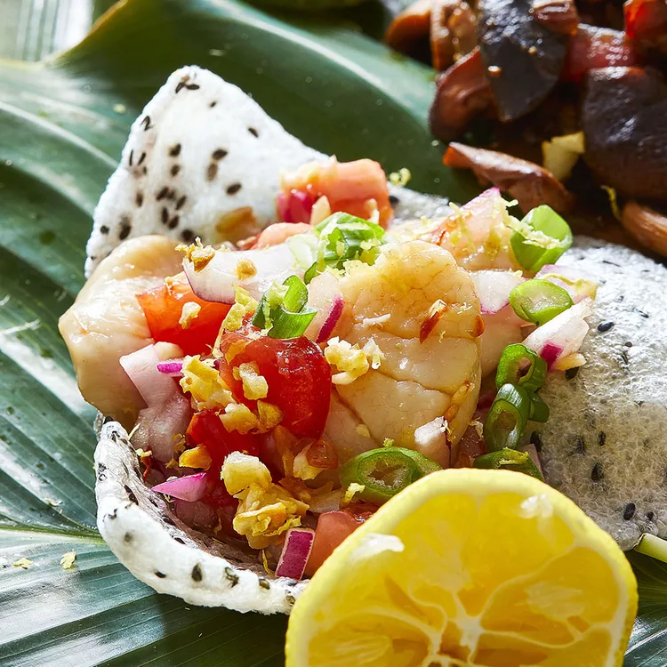

Kinilaw na Scallops Recipe

Description
An acidic marinade is all that is needed to cook this spicy and sour
kinilaw na scallops. You can also serve the scallops on toasted sesame
crackers. As with all kinilaws, the acidic marinade "cooks" the seafood
without heat-and it happens pretty quickly. So it's good to make this at
the last minute and set it out just before people dig in.
Ingredients
- 12 ounces sea scallops, rinsed and sliced in half horizontally
- ¾ cup spiced coconut vinegar
- 1 tablespoon vegetable oil, or as needed
- 1 tablespoon coarsely chopped garlic (Optional)
- 2 medium Roma tomatoes, chopped
- ½ cup chopped red onion
- 1 tablespoon minced fresh ginger
- 1 Thai chile pepper, seeded and minced
- 1 ½ teaspoons calamansi juice
- ¼ cup bias-sliced green parts of green onions
- 1 pinch lemon zest
- fleur de sel to taste
Steps
-
Mix scallops with spiced coconut vinegar in a large bowl. Cover and
chill 15 minutes or to desired firmness. Drain immediately, reserving
vinegar, and arrange on small plates or in quartered coconut shells.
-
Heat oil in a pan over medium heat. Add garlic; cook and stir until
golden brown and lightly crispy, 3 to 5 minutes.
-
Mix tomatoes, red onion, ginger, Thai chile, and calamansi with reserved
vinegar. Top scallops with tomato mixture and sprinkle with green onions
and fried garlic. Finish with a sprinkle of lemon zest and fleur de sel.